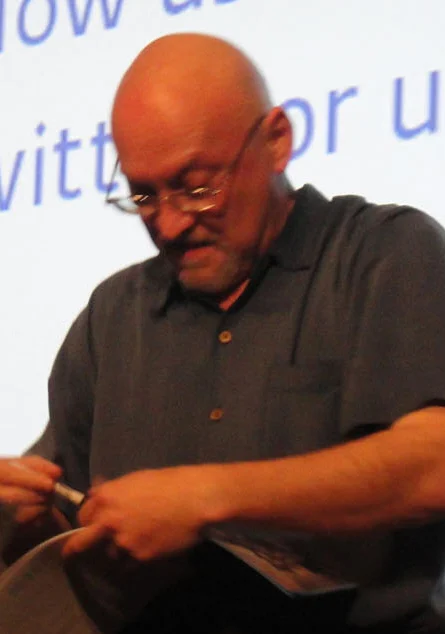

Explore film ↗
Explore film ↗The Shawshank Redemption
Frank Darabont
DIRECTOR PROFILE
Frank Árpád Darabont (born Ferenc Árpád Darabont, January 28, 1959) is an American screenwriter, director, and producer.

LIFE & CAREER
Frank Árpád Darabont (born Ferenc Árpád Darabont, January 28, 1959) is an American screenwriter, director, and producer. He has been nominated for three Academy Awards and a Golden Globe Award. In his early career, he was primarily a screenwriter for horror films such as A Nightmare on Elm Street 3: Dream Warriors (1987), The Blob (1988), and The Fly II (1989).
Adapted excerpt from Wikipedia, CC BY-SA 4.0. Pronunciation notes omitted.
Read the full biographyImage: PopCultureGeek.com. Source & rights: CC BY 2.0 ↗.
Profile reference: Director background ↗
Open this director checklist ↗
A selection of this director’s films available in the archive.
Explore film ↗Frank Darabont